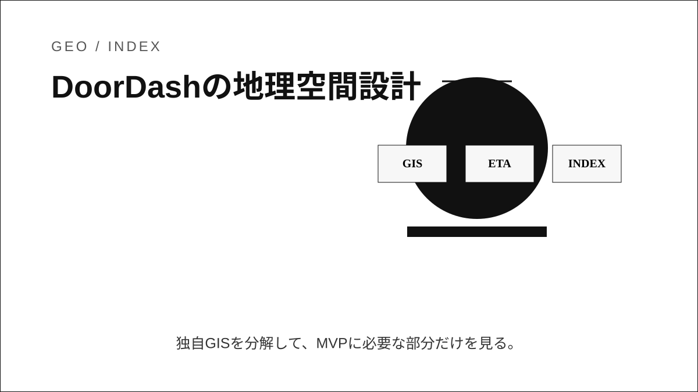
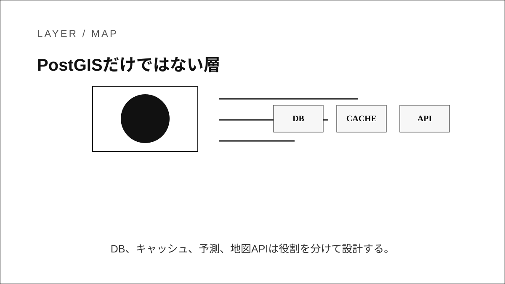

Question Note / Geospatial Architecture
DoorDash: 配送ETA・Dispatch・物流最適化の地理空間設計

何をしている企業か
レストランや小売から消費者へ商品を届けるラストマイル配送プラットフォーム。注文、店舗、配達員、顧客、道路状況を結びつける。
位置情報で解いている課題
料理や商品の準備時刻、配達員の現在地、移動時間、ピックアップ待ち、ドロップオフまでのETAを同時に予測する必要がある。単なる距離順では品質が出ない。

公開されている技術情報
- DoorDash Engineering Blog
- DoorDash Engineering: machine learning and logistics articles
- DoorDash Developer Documentation
使っている地理空間技術
公開技術ブログでは、機械学習による配送時間予測、配達員割当、物流最適化が説明されている。GISは地図DBそのものより、注文ライフサイクル上の位置・時間・状態を予測モデルへ渡す運用基盤として働く。
「独自GIS」と呼べる部分
独自GIS的な部分は、店舗、配達員、注文、顧客をリアルタイムに照合し、ETAとDispatch判断へつなぐ層。空間インデックスだけでなく、準備時間や待ち時間という業務イベントが重要になる。
PostGISとの違い
PostGISは距離・包含・近傍検索に強いが、配送ETAや割当品質はDB関数だけでは決まらない。予測モデル、イベントストリーム、位置キャッシュ、業務状態管理が必要になる。
アーキテクチャ上どこに入るか
Mobile App
↓
Backend API
↓
Geospatial Engine / Index
↓
DB / Cache
↓
Map / Navigation APIこの図でいう Geospatial Engine / Index が、空間インデックス、ルーティング、ETA、マッチング、リアルタイム位置キャッシュを吸収する場所です。PostGISは主に DB / Cache 側の保存・検索基盤として使い、Mapbox等の地図APIは Map / Navigation API 側に置きます。
トラックナビアプリに応用できる点
トラックナビでは、配送ETAそのものより「地点、車両、予定、作業状態を分けて保存し、予測は後から足す」考え方が参考になる。MVPは静的施設検索とルート案内で十分。
まだ真似しなくてよい点
リアルタイムDispatch、配達員最適割当、需要予測モデルはMVPで真似しない。
将来スケールしたときに参考になる点
到着予測、積卸し待ち時間、休憩候補推薦を改善する段階で、イベント履歴と位置履歴を学習・分析できる形にする。

結論
DoorDashの事例は、独自GISを「巨大な地図DB」ではなく、空間インデックス、ルーティング、ETA、マッチング、リアルタイム位置キャッシュ、分析基盤の組み合わせとして読むと理解しやすいです。トラックナビMVPでは、まずPostgreSQL + PostGIS + Mapboxで実用範囲を作り、後からH3/S2/Redis GEO/独自インデックスを足す順番が安全です。